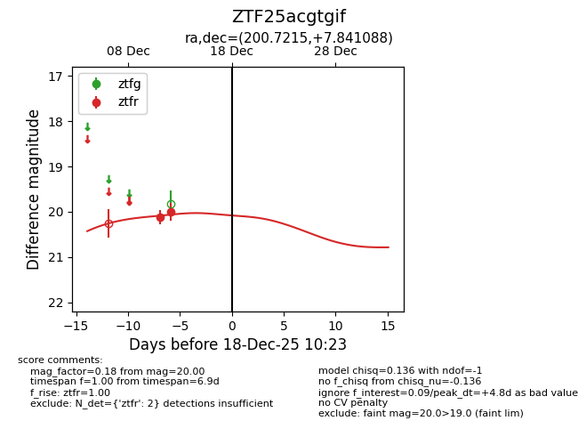
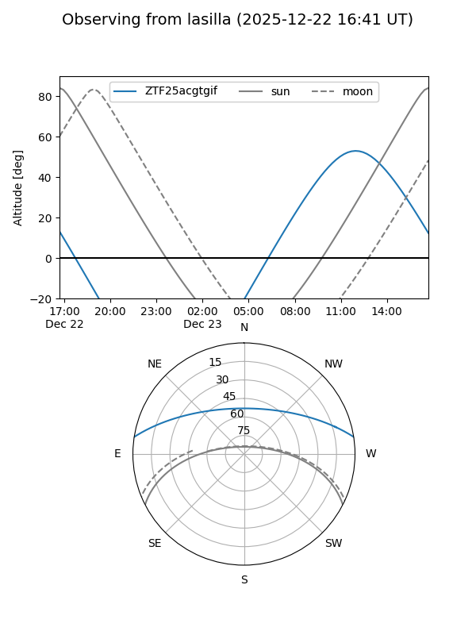
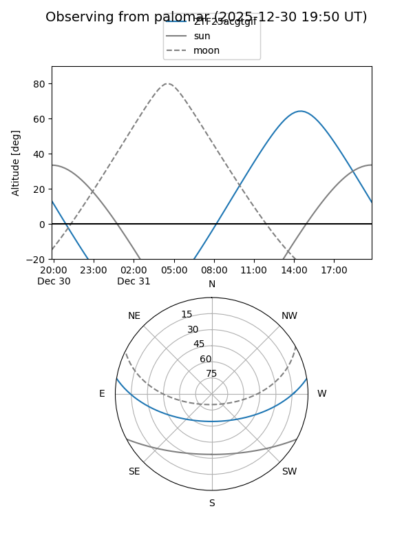

ZTF25acgtgif
Target ZTF25acgtgif at 2025-12-18 11:18
Aliases and brokers:
FINK: fink-portal.org/ZTF25acgtgif
Lasair: lasair-ztf.lsst.ac.uk/objects/ZTF25acgtgif
ALeRCE: alerce.online/object/ZTF25acgtgif
alt names
ZTF25acgtgif (ztf,fink_ztf)
Coordinates:
equatorial (ra, dec) = 200.7215,+7.84109
equatorial (HMS+DMS) = 13:22:53.16,+07:50:27.92
galactic (l, b) = (325.4997,+69.32328)
Photometry
last ztfr=20.00
2 ztfr detections
Lightcurve

Visibility


Additional plots